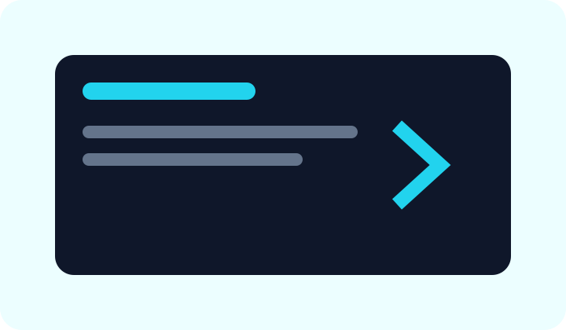

Анна Морозова
Web и дизайн
Помогает ученикам создавать первые сайты и понимать структуру интерфейсов.
Проектная работа, обсуждение, практика и самостоятельные решения.
Главная задача CodeSpark — дать ребёнку среду, где технологии становятся инструментом творчества и решения задач.
Ученики учатся разбивать большую задачу на шаги, читать ошибки, проверять гипотезы и объяснять свои решения.
Web и дизайн
Помогает ученикам создавать первые сайты и понимать структуру интерфейсов.

Python
Объясняет программирование через задачи, игры и небольшие приложения.
GameDev
Работает с игровыми механиками, сценариями и командными проектами.
Несколько законченных проектов.
Навык искать и исправлять ошибки.
Git, review и презентация результата.